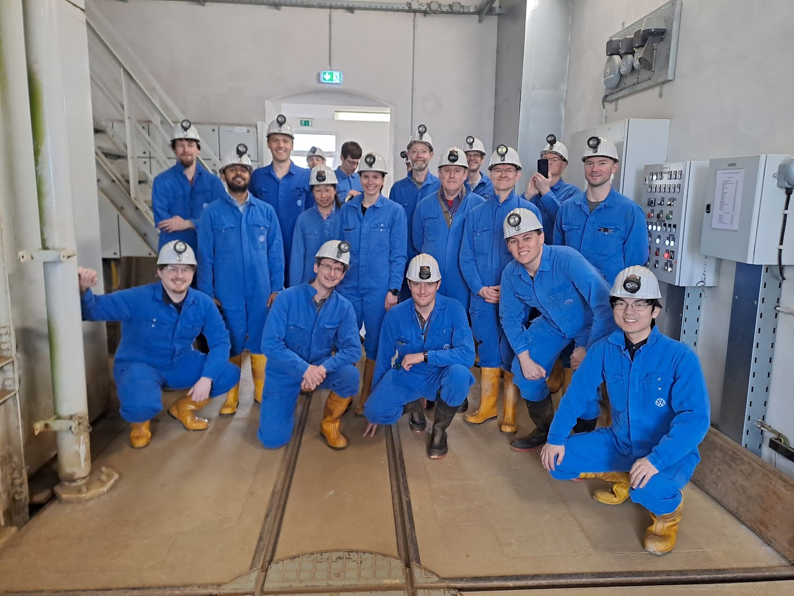

{% comment %}
The homepage, in the 2026 design (css/mtex-site.css, _layouts/home.html).
The figures come from the documentation build (figures/<Page>_NN.png) and link
to the page that draws them.
{% endcomment %}

<section class="mx-hero">
  <div class="mx-wrap mx-hero-grid">
    <div>
      <div class="mx-eyebrow">Free, open-source toolbox</div>
      <h1>Crystallographic texture and microstructure, <span>in code you can read</span></h1>
      <p class="mx-lede">MTEX brings EBSD maps, X-ray and neutron pole figures and 3D grain data into one data model, and analyses them with published algorithms you can read, change and cite. It runs in MATLAB and in Python.</p>
      <div class="mx-btns">
        <a class="mx-btn mx-btn-primary" href="#start">Get started</a>
        <a class="mx-btn mx-btn-ghost" href="gallery">Browse the gallery</a>
      </div>
      <div class="mx-facts"><span><b>GPL-2.0</b> · free for any use</span><span>Cited by <b>4,500+</b> publications</span><span><a href="gallery">More in the gallery →</a></span></div>
    </div>
    <div class="mx-mosaic" aria-label="Figures from the documentation">
      <a class="mx-plate" href="TiBetaReconstruction.html">
        <div class="mx-plate-im"></div>
        <div class="mx-plate-cap"><b>Parent β grains in titanium</b><span>EBSD</span><code>TiBetaReconstruction</code></div>
      </a>
      <a class="mx-plate" href="PoleFigure2ODF.html">
        <div class="mx-plate-im"></div>
        <div class="mx-plate-cap"><b>ODF from measured pole figures</b><span>X-ray diffraction</span><code>PoleFigure2ODF</code></div>
      </a>
      <a class="mx-plate" href="WaveVelocities.html">
        <div class="mx-plate-im"></div>
        <div class="mx-plate-cap"><b>Wave speeds from texture</b><span>Tensor properties</span><code>WaveVelocities</code></div>
      </a>
      <a class="mx-plate" href="CrystalShapes.html">
        <div class="mx-plate-im"></div>
        <div class="mx-plate-cap"><b>Grains drawn as crystals</b><span>Visualisation</span><code>CrystalShapes</code></div>
      </a>
    </div>
  </div>
</section>

<section class="mx-section mx-band" aria-labelledby="mx-what">
  <div class="mx-wrap">
    <div class="mx-head"><h2 id="mx-what">What MTEX gives you</h2></div>
    <div class="mx-cols">
      <div class="mx-col">
        <h3><svg viewBox="0 0 24 24" aria-hidden="true"><path d="M4 7h13l-3-3M20 17H7l3 3" fill="none" stroke="currentColor" stroke-width="2" stroke-linecap="round" stroke-linejoin="round"/></svg>Read and write every instrument</h3>
        <p>EBSD from Oxford Instruments, EDAX and Bruker, 3D data from Xnovo and DREAM.3D, Neper tessellations and 28 pole figure formats, in one data model and back out to vendor files. Compare maps from different microscopes in one script.</p>
        <ul class="mx-items">
          <li><a href="EBSDImport.html">Supported file formats</a></li>
          <li><a href="EBSDExport.html">Export to vendor formats</a></li>
          <li><a href="EBSDReferenceFrame.html">Reference frames of each vendor</a></li>
        </ul>
      </div>
      <div class="mx-col">
        <h3><svg viewBox="0 0 24 24" aria-hidden="true"><path d="M12 3l2.6 5.6 6 .7-4.5 4.1 1.2 6L12 16.4 6.7 19.4l1.2-6L3.4 9.3l6-.7z" fill="none" stroke="currentColor" stroke-width="2" stroke-linejoin="round"/></svg>Beyond the acquisition software</h3>
        <p>MTEX also covers analyses that acquisition software leaves out, and it combines diffraction and EBSD data in one place.</p>
        <ul class="mx-items">
          <li><a href="PoleFigure2ODF.html">ODFs from X-ray and neutron pole figures</a></li>
          <li><a href="MaParentGrainReconstruction.html">Parent grains for any orientation relationship</a></li>
          <li><a href="TensorAverage.html">Elastic and other tensor properties from texture</a></li>
          <li><a href="EBSDDenoising.html">Variational denoising of orientation maps</a></li>
        </ul>
      </div>
      <div class="mx-col">
        <h3><svg viewBox="0 0 24 24" aria-hidden="true"><path d="M8 6l-6 6 6 6M16 6l6 6-6 6" fill="none" stroke="currentColor" stroke-width="2" stroke-linecap="round" stroke-linejoin="round"/></svg>Open, down to the algorithm</h3>
        <p>Every function is source code you can open. The core algorithms are published in peer-reviewed papers. An analysis is a script: it reruns on three hundred maps, and it serves as your methods section.</p>
        <ul class="mx-items">
          <li><a href="https://github.com/mtex-toolbox/mtex">Source code on GitHub</a></li>
          <li><a href="publications.html">The papers behind the algorithms</a></li>
          <li><a href="MTEXScripts.html">Working with scripts</a></li>
        </ul>
      </div>
    </div>
  </div>
</section>

<section class="mx-section" aria-labelledby="mx-ws">
  <div class="mx-wrap">
    <div class="mx-ws">
      
      <div class="mx-ws-text">
        <div class="mx-eyebrow">Annual workshop · Freiberg · March 2027</div>
        <h2 id="mx-ws">Workshop on Quantitative Microstructure Analysis</h2>
        <p>Two weeks with the MTEX developers. The first week teaches texture and microstructure analysis from the ground up. In the second you bring your own data and work on it with experts from metallurgy, geology and semiconductors.</p>
        <div class="mx-tags"><span class="mx-new">New in 2027</span><span>AI-assisted analysis</span><span>MTEX for Python</span></div>
        <a class="mx-btn mx-btn-primary" href="workshop27">Programme and registration</a>
      </div>
    </div>
  </div>
</section>

<section class="mx-section mx-band" aria-labelledby="mx-ai">
  <div class="mx-wrap mx-ai-grid">
    <div class="mx-ai-text">
      <div class="mx-eyebrow">Describe it, get a script</div>
      <h2 id="mx-ai">AI assistants write MTEX scripts you can check</h2>
      <p>Describe your analysis in plain words and an assistant drafts the script. The documentation is mapped for AI tools in <a href="llms.txt"><code>llms.txt</code></a>. The result is ordinary code, so you read it, run it and keep it with your data.</p>
      <div class="mx-prompt">
        <span class="mx-who">You</span>
        <p>I have an Oxford map <code>A.ctf</code> and an EDAX map <code>B.ang</code> of the same steel. Compare the grain size distributions.</p>
      </div>
    </div>
    <div class="mx-code" aria-label="Script written by an assistant">
      <header>
        <span id="mx-code-name">compareGrainSize.m</span>
        <div class="mx-lang" role="group" aria-label="Code language">
          <button type="button" data-lang="matlab" aria-pressed="true"><span class="mx-dot-m"></span>MATLAB</button>
          <button type="button" data-lang="python" aria-pressed="false"><span class="mx-dot-p"></span>Python</button>
        </div>
      </header>
<pre data-code="matlab"><span class="c">% two vendors, one data model</span>
ebsdA = <span class="k">EBSD.load</span>(<span class="s">'A.ctf'</span>);   <span class="c">% Oxford Instruments</span>
ebsdB = <span class="k">EBSD.load</span>(<span class="s">'B.ang'</span>);   <span class="c">% EDAX</span>

<span class="c">% identical grain definition for both</span>
grainsA = <span class="k">calcGrains</span>(ebsdA(<span class="s">'indexed'</span>),<span class="s">'angle'</span>,10*degree);
grainsB = <span class="k">calcGrains</span>(ebsdB(<span class="s">'indexed'</span>),<span class="s">'angle'</span>,10*degree);

<span class="c">% equivalent radius distributions</span>
histogram(grainsA.equivalentRadius)
hold on
histogram(grainsB.equivalentRadius)
hold off
legend(<span class="s">'Oxford'</span>,<span class="s">'EDAX'</span>)</pre>
<pre data-code="python" hidden><span class="c"># two vendors, one data model</span>
ebsdA = <span class="k">EBSD.load</span>(<span class="s">'A.ctf'</span>)   <span class="c"># Oxford Instruments</span>
ebsdB = <span class="k">EBSD.load</span>(<span class="s">'B.ang'</span>)   <span class="c"># EDAX</span>

<span class="c"># identical grain definition for both</span>
grainsA = <span class="k">calcGrains</span>(ebsdA[<span class="s">'indexed'</span>], angle=10*degree)
grainsB = <span class="k">calcGrains</span>(ebsdB[<span class="s">'indexed'</span>], angle=10*degree)

<span class="c"># equivalent radius distributions</span>
histogram(grainsA.equivalentRadius)
hold(True)
histogram(grainsB.equivalentRadius)
hold(False)
legend(<span class="s">'Oxford'</span>, <span class="s">'EDAX'</span>)</pre>
    </div>
  </div>
</section>

<section class="mx-section" id="start" aria-labelledby="mx-start">
  <div class="mx-wrap">
    <div class="mx-head">
      <h2 id="mx-start">Get started</h2>
      <p>The same commands in both. The Python version needs no MATLAB licence.</p>
    </div>
    <div class="mx-start">
      <div class="mx-door">
        <h3><span class="mx-dot-m"></span>MTEX for MATLAB <span class="mx-ver">7.1.0 · Sep 2026</span></h3>
        <ol>
          <li>Download and unzip <a href="https://github.com/mtex-toolbox/mtex/releases/download/mtex-7.1.0/mtex-7.1.0.zip">mtex-7.1.0.zip</a></li>
          <li>In MATLAB, run <code>startup_mtex</code> in that folder</li>
          <li>Try <code>mtexdata titanium</code>, then <code>plot(ebsd)</code></li>
        </ol>
        <div class="mx-links2"><a href="download#installation">Installation help</a><a href="EBSDTutorial.html">EBSD tutorial</a><a href="changelog">Release notes</a></div>
      </div>
      <div class="mx-door">
        <h3><span class="mx-dot-p"></span>MTEX for Python <span class="mx-ver">1.0.0 · Python 3.12+</span></h3>
        <ol>
          <li><code>pip install "mtex[all]"</code></li>
          <li><code>from mtex import *</code></li>
          <li>Try <code>ebsd = mtexdata('titanium')</code>, then <code>plot(ebsd)</code></li>
        </ol>
        <div class="mx-links2"><a href="EBSDTutorial.html">EBSD tutorial</a></div>
      </div>
    </div>
  </div>
</section>

<section class="mx-section mx-band">
  <div class="mx-wrap mx-foot3">
    <div>
      <h3>News</h3>
      <ul class="mx-news">
        <li><time>Sep 2026</time><div>MTEX for Python 1.0: the whole documentation, now also in Python</div></li>
        <li><time>Sep 2026</time><div><a href="https://github.com/mtex-toolbox/mtex/releases/download/mtex-7.1.0/mtex-7.1.0.zip">MTEX 7.1.0</a> released · <a href="changelog#1">release notes</a></div></li>
        <li><time>Aug 2026</time><div><a href="https://github.com/mtex-toolbox/mtex/releases/download/mtex-7.0.0/mtex-7.0.0.zip">MTEX 7.0.0</a> released · <a href="changelog#2">release notes</a></div></li>
        <li><time>Apr 2026</time><div>Preprint: <a href="https://arxiv.org/abs/2604.17997">A unified framework for grain boundary distributions in textured materials</a></div></li>
        <li><time>Mar 2026</time><div>Preprint: <a href="https://doi.org/10.2139/ssrn.6208342">Three-dimensional shape metrics for martensite and bainite from two-dimensional orientation maps</a></div></li>
      </ul>
      <p style="margin:12px 0 0"><a href="changelog">Complete changelog →</a></p>
    </div>
    <div>
      <h3>Community</h3>
      <ul class="mx-linklist">
        <li><a href="https://github.com/mtex-toolbox/mtex/discussions">Ask a question</a></li>
        <li><a href="https://github.com/mtex-toolbox/mtex/issues">Report a bug</a></li>
        <li><a href="scripts">Share a script</a></li>
        <li><a href="addons">Add-ons</a></li>
        <li><a href="https://github.com/mtex-toolbox/mtex/blob/develop/CONTRIBUTING.md">Contribute to MTEX</a></li>
        <li><a href="videos.html">Videos</a></li>
      </ul>
    </div>
    <div>
      <h3>Cite MTEX</h3>
      {% assign c = site.citation %}
      <div class="mx-cite">{{ c.authors }}. <i>{{ c.title }}.</i> {{ c.journal }} {{ c.volume }} ({{ c.year }}) {{ c.pages }}. <a href="{{ c.url }}">doi:{{ c.doi }}</a></div>
      <p class="mx-small" style="margin:10px 0 0">Code GPL-2.0 · documentation {{ site.doc_license_name }}</p>
    </div>
  </div>
</section>

<script>
(function () {
  var names = { matlab: 'compareGrainSize.m', python: 'compare_grain_size.py' };
  var buttons = document.querySelectorAll('.mx-lang button');
  buttons.forEach(function (b) {
    b.addEventListener('click', function () {
      var lang = b.getAttribute('data-lang');
      buttons.forEach(function (x) { x.setAttribute('aria-pressed', String(x === b)); });
      document.querySelectorAll('[data-code]').forEach(function (p) { p.hidden = p.getAttribute('data-code') !== lang; });
      document.getElementById('mx-code-name').textContent = names[lang];
    });
  });
})();
</script>
